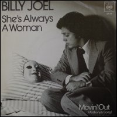

Sugar and spice and all things nice
There is a particular kind of girl who is beautiful and selfish and heartless. She does not care about others because the world has never required her to. This is because, in secular currency, beauty has a much higher value than kindness and gentleness. If a plain girl is kind, her kindness will be overlooked on account of her plainness. If a beautiful girl is cruel, her cruelty will be overlooked on account of her beauty. Beauty can buy a girl fame, wealth and popularity, even though she possesses a plenitude of character flaws and vices.
Billy Joel speaks of this girl in one of his most powerful love songs, She’s Always a Woman. The song begins with an observation that her powers are powers of destruction. Even the merest glance can be used to terrible effect (“She can kill with a smile, she can wound with her eyes”). Her conscience is not bothered by deception (“She can ruin your faith with her casual lies”), nor has she any regard for the truth (“She can ask for the truth but she’ll never believe you”). Her appearance is a mask (“She only reveals what she wants you to see, she hides like a child”) and her offers of paradise (“She’ll promise you more than the garden of Eden”) are illusory (“the most she will do is throw shadows at you”). She is selfish (“Oh she takes care of herself”), capricious (“She just changes her mind”), inexorable (“Oh and she never gives out and she never gives in”), and vindictive (“She’ll carelessly cut you and laugh while you’re bleeding”). She will not be obligated to anyone (“She’ll take what you give her as long as it’s free, yeah she steals like a thief”), nor does she need anyone (“She can take you or leave you”), and she always acts in her own interest (“She does as she pleases”).
So far the song seems to be a searing indictment on women of this description. However, the singer’s reaction to the girl in question is strangely ambivalent (“She’ll bring out the best and the worst you can be”). At times she seems to display benevolence (“She’s frequently kind and she’s suddenly cruel”), and the songwriter seemingly does not hold her culpable (“Blame it all on yourself”).
The lyrics hint that the singer is deluded about the girl’s true nature. Billy Joel’s refrain effectively communicates that her conduct does not matter, because “she’s always a woman to me”. However, it is less clear whether her femininity sufficiently justifies her actions. One can’t help but wonder if the singer’s description of this girl as “a woman” is more of a subtle criticism than an excuse.
Both genders can learn a lesson from this song: first, beauty does not entitle girls to be so nasty; second, beauty shouldn’t trick guys into thinking that girls this nasty are not as nasty as they really are.